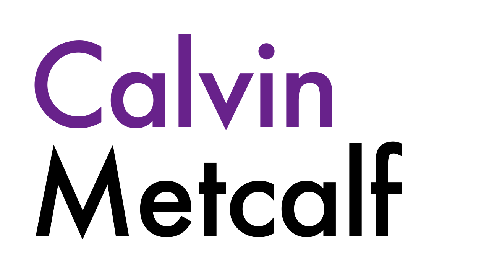
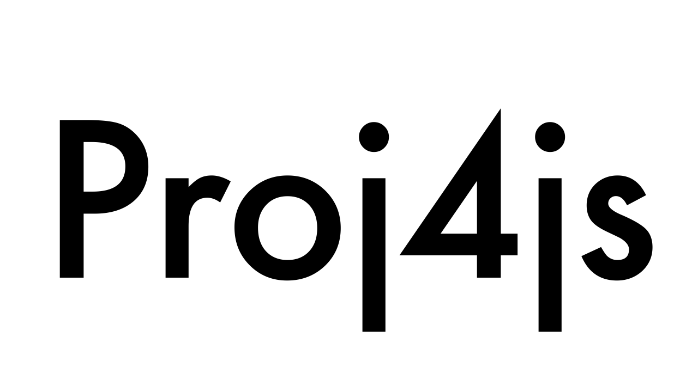
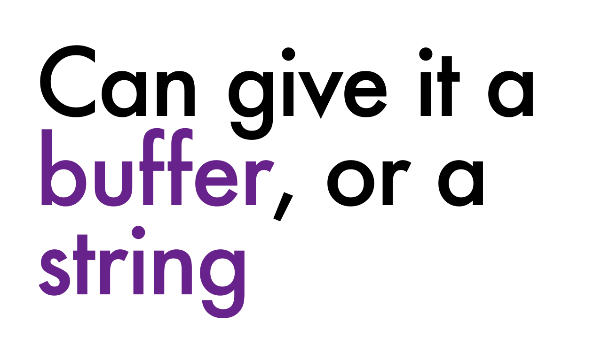
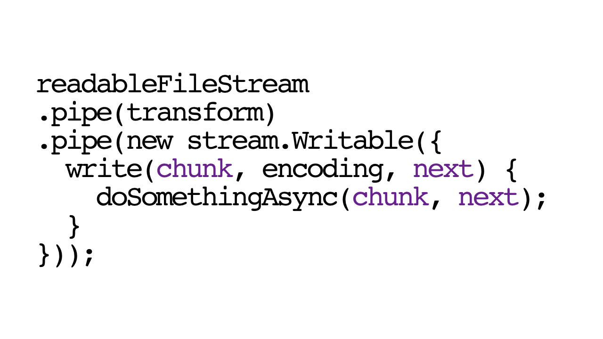
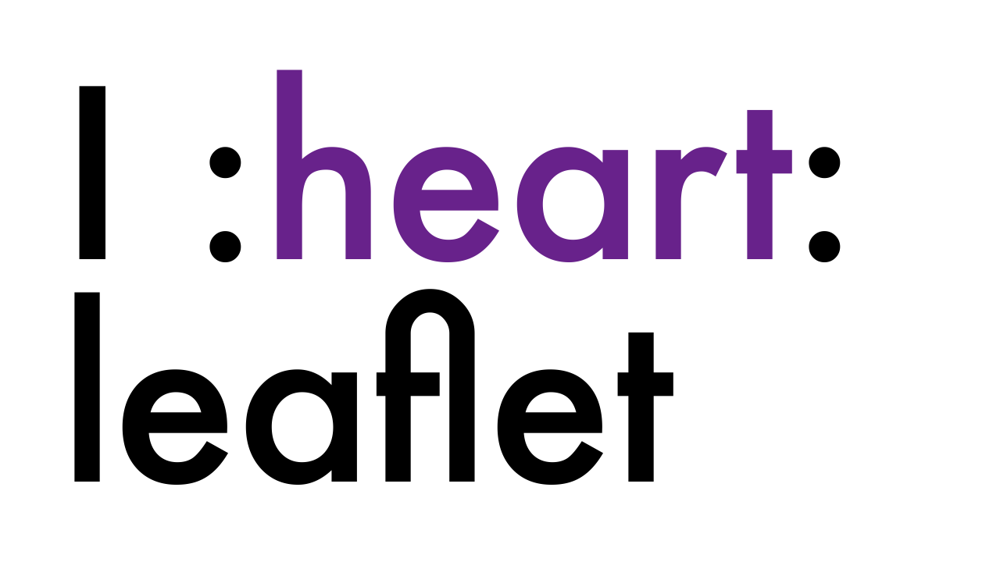
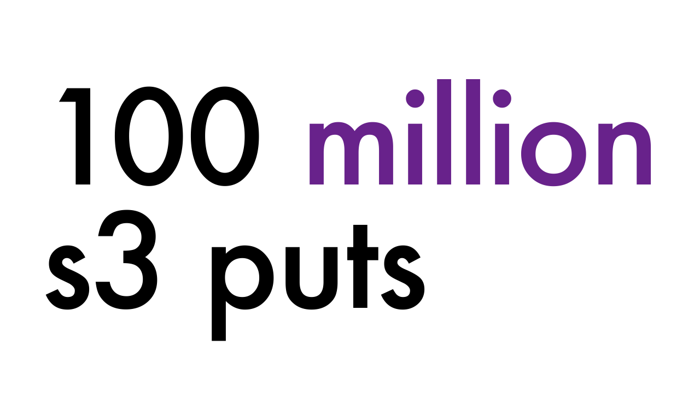
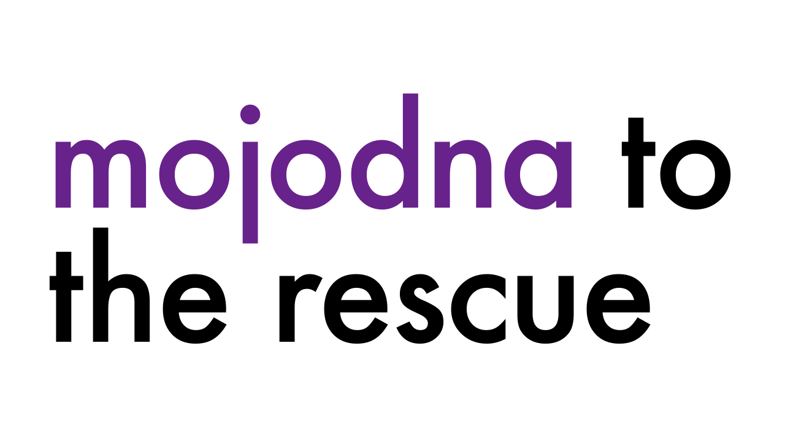

follow allong at geo.rodeo
on a side note, if the organizers of the geo rodeo would like this domain for next year, talk to me after
on a side note, if the organizers of the geo rodeo would like this domain for next year, talk to me after

hello my name is Calvin Metcalf
I work for AppGeo
You might know me from such projects as
You might know me from such projects as

Proj4JS
parsing things in js that should't be
this is a cartodb query builder for node.js this one you should know about if you don't
I did not create topojson, I suspect this was a trick to get me to say the name of the creator.
I did create a python port and helped write the spec
I did create a python port and helped write the spec
Mike Bostock did, go a head and cross that one off
today we're talking about my favorite app

I hope you never see
my company AppGeo traditionally has done apps for governmental agencies and local government
These apps, especially local government ones, have some hard caps on the number of users
These apps, especially local government ones, have some hard caps on the number of users
In other words, scaling is not an issue we usually have to deal with
This is not the case with drivetexas.org
which you might even have used to get here
We had well over 100 thousand hits on april 18th of this year
This is not the case with drivetexas.org
which you might even have used to get here
We had well over 100 thousand hits on april 18th of this year
the data on drivetexas can also change rapidly
And the data tends to change most rapidly when people are using it the most due to secondary delays and accidents or county wide conditions that are applied to all (state) roads in the county
The gist of the drivetexas is that txdot has conditions in a esri feature service with traffic conditions like accidents and construction which it needs displayed on a map that will work even if 100,000 people use it.
we came in to replace a solution based on some compay's tech that didn't work, not shocking since some company often has trouble with 'the web'
we came in to replace a solution based on some compay's tech that didn't work, not shocking since some company often has trouble with 'the web'

This originally ran on a Google product
called maps engine (GME) which has now been discontinued. The site now runs on
A product called Maplarge which you probably havn't heard of as most of the previous work was with the DOD and is thus classified
GME was very temperamental
GME was very temperamental
and broke a couple times including once when I was on my honeymoon
which thankfully others were able to solve, and another time on a weekend and I ended up having to diagnose problems with google engineers and write a patch from a balcony of a party I was at … a party thrown by a friend of my wife.
it was decided we would make a 2nd version of drivetexas
it would run on completely separate infrastructure, in this case amazon instead of google
it would be as self contained as possible no external dependencies if possible
It would be as simple as possible, both in the sense that it would only have the features it absolutely needed to get the job done and in the sense of avoiding having much of a backend to handle serving requests.
so in case of the main site breaking we could flip a switch and activate that one
My idea was to use mapnik to generate a pyramid of tiles, both images, and utf grids to provide interaction. We’d create the tile and then upload them to s3.
This was surprisingly snappy, so we were able to tile it to level 11 every 5 minutes instead of level 10 every 10 minutes as originally planned.
I’d used tilelive to generate tiles for with mapnik for an app before so I just copied my same setup.
I’d used tilelive to generate tiles for with mapnik for an app before so I just copied my same setup.
Tilelive is mapboxes all encompassing framework for working with tiles with various backends, it has minimal documentation so even though I knew in theory I could use it to upload to s3 I didn’t want to mess with that.
The final setup ended up being that we’d download the data from both the line and point endpoints (This is esri remember). To make sure that more serious accidents were always on top of less serious ones, so accident is above construction, we just sorted the data before writing it as a geojson because mapnik just uses the ‘painter's algorithm’ which just means latter things go on top of previous things.
Once I had a proof of concept that mapnik and s3 would be viable then it came to creating the actual webapp.
The app was being stripped to its bare essentials. Namely it would always show all current conditions, so we would remove the ability to toggle off condition types, the ability to switch over to viewing planned construction, the ability to do searches, to plan routes, and to view other interesting layers.

If multiple conditions were located at the same location, we’d only show the one that was ‘on top’ based on the condition sorting, unlike the main one which showed them all.
The legend does have to show only those types of conditions that are present on the map, i.e. if there is no snow on the map, don’t show it on the legend.

We use leaflet for the map, along with the very nice utf grid plugin plus use leaflet.hash and a modified version of the legend plugin from mapbox.
The way we end up doing it is that each time it runs, the tiles go into a new folder.
We set the cache-control attributes on the tiles so that browsers would cache them for a year
We have a mustache template for the index page and when we are done uploading the tiles we use the template to set which of the legend items are visible, the new path to the tiles, and the updated date.
To ensure that the client sees the most up to date version of it, we use the super fancy meta refresh tag.
We use amazon cloudfront to allow us to have multiple subdomains point to the same file

I setup a cron job to run this every 5 minutes and everything is great
For a month then all company email
Out s3 usage spiked 2 orders of magnitude last month anybody know whats happening ?
That was my bad.
I added a test for blank tiles and utf grids ends up filtering out like 90% plus
At this point we also realized that the background tiles I had copied into our s3 bucket for development were going to be a no go production due to flagrantly violating the mapbox terms of service.

Since the client wanted a few changes anyway I figured I could just tile it based on the output of mapbox studio classic, how hard could that be

Very fraking hard
Thankfully Seth Fitzsimmons aka mojodna from stamen had figured out how and I was able to create my own mapbox-streets like tiles that could be in my own s3 bucket and wouldn’t go down if mapbox went down
And the last thing was redirecting users to the static map if drivetexas went down and back when it went up, done using this new fangled technology called ‘DNS’.
and thats how it works
maybe do awards ceremony for bingo?